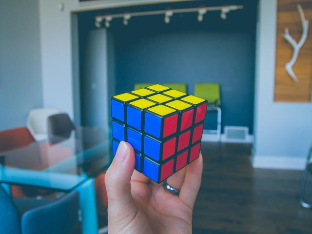
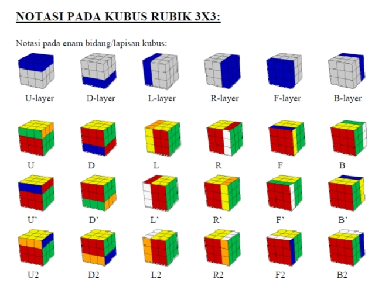
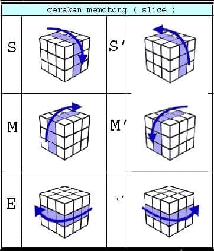
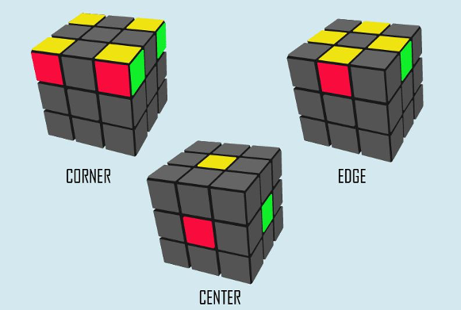
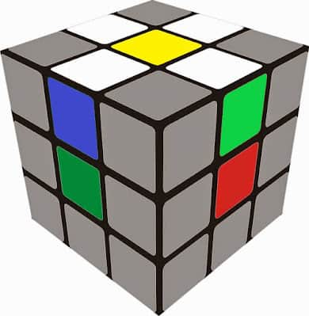
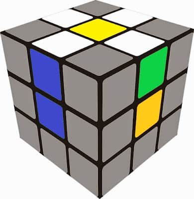
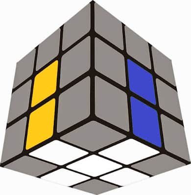
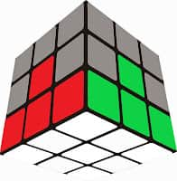
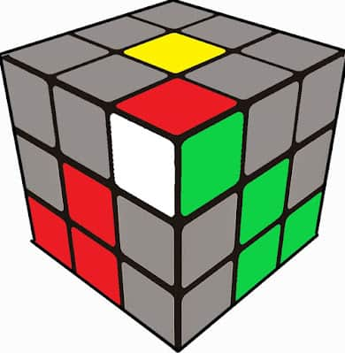

Danuartha • 2 September 2021
Tutorial Rubik 3x3 Untuk Pemula

Dalam rubik 3x3 ada 7 cara penyelesaian untuk bisa menyelesaikan sebuah rubik. Di artikel ini saya akan memeberitahu kalian cara menyelesaikan rubik 3x3 dengan metode LBL (Layer By Layer) untuk pemula.
Tapi Sebelum itu ada baiknya untuk kalian mengetahui notasi-notasi pada rubik 3x3, agar kalian bisa lebih mudah memahami algoritma/rumus rubik yang nanti akan saya jelaskan di artikel ini.

Penjelasan Notasi Rubik :
- U = Up (Atas)
- D = Down (Bawah)
- L = Left (Kiri)
- R = Right (Kanan)
- F = Front (Depan)
- B = Back (Belakang)
Jika terdapat tanda petik diatasnya, contoh : (U') itu artinya diputar berlawanan arah jarum jam
Ada juga notasi rubik yang memutar bagian lapis, contohnya seperti ini :
Untuk notasi di atas sebenarnya jarang di temukan pada algoritma di dalam rubik 3x3x3, kecuali notasi M atau Middle.
Sumber : Rubik.id
Oke guys, jika kalian sudah paham notasi-notasi di rubik 3x3 langsung saja kita akan memulai cara menyelesaikan rubik 3x3 untuk pemula.
Tahap 1 : Membuat Cross
Untuk membuat cross, kalian perlu mengetahui dan memahami bagian bagian dari sebuah Rubik's Cube, yaitu Edge, Corner dan Center.

Sebuah Center hanya memiliki 1 warna, dan posisi center ini bertumpu pada core, sehingga tidak membuat antara center 1 dan yang lain pindah posisinya.
Sebuah Edge memiliki 2 warna, warna warna pada edge mengikuti warna dari centernya, contoh edge kuning merah berasal dari warna center kuning merah. Corner merupakan bagian dari Rubik's Cube yang memiliki 3 warna.
Nah setelah kalian paham mengenai bagian dari rubik's cube, maka sekarang kita akan memasuki tahap untuk membuat cross.
Ini adalah contoh cross yang benar dalam rubik 3x3.
Sebenarnya dalam membuat cross ini tidak membutuhkan algoritma , hanya dengan intuitif kalian seharusnya sudah bisa membuatnya, tapi mimin sering melihat teman mimin kesulitan saat membuat cross, mungkin ini dikarenakan banyaknya warna yang di lihat pada rubik itu sendiri.
Contoh Kasus
Misal, kalian akan menyelesaikan Cross pada center putih, berarti kalian harus fokus pada edge yang memiliki warna putih. kemudian posisikan edge itu pada sisi yang ada center kuningnya ( sisi kebalikan dari sisi yang memiliki center putih), contohnya seperti ini:

Setelah itu kalian lihatlah warna kedua dari edge yang memiliki warna putih.
Pada gambar diatas, warna yang terlihat adalah edge dengan warna putih hijau dan putih biru, berarti anda harus menempatkan warna birunya ke center yang berwarna biru, caranya hanya tinggal di putar saja ya.

Setelah seperti ini, lakukan gerakan F2 untuk memasukkan edge ke center putih ( posisi sebenarnya ).
Jadinya seperti ini.
Ini adalah contoh cross yang benar. Posisikan tetap seperti ini, yaitu cross berada di bawah.
Setelah kalian lancar membuat cross seperti di atas, maka kalian bisa menuju ke tahap berikutnya, yaitu menyelesaikan first layer (Lapisan pertama).
Sumber : rubik.id
Tahap 2 : Menyelesaikan Layer Pertama
Dalam tahap layer pertama / first layer, kalian harus fokus pada corner yang memiliki warna putih. Lalu kalian lihat, pada corner yang berwarna putih terdapat warna apa saja, pada gambar di bawah ini Merah dan Hijau, jadi kalian harus memposisikan Corner Putih Merah Hijau ke posisi center yang terdapat warna merah dan hijau.
Kemudian kalian setidaknya akan menemukan 5 kasus yang berbeda, yaitu
Kasus 1
Jika posisi corner putih hadap depan lakukan rumus ini,
Rumus : U R U' R'
Atau jika posisi corner putih hadap kiri lakukan rumus ini,
Rumus : L' U' L
Kasus 2
Jika posisi kamu di center merah lakukan rumus ini,
Rumus : R U R'
Atau jika posisi kamu di center hijau lakukan rumus ini,
Rumus : U' L' U L
Kasus 3
Jika posisi kamu di center merah lakukan rumus ini,
Rumus : R U R' U' (lakukan sebanyak 3 kali)
Atau jika posisi kamu di center hijau lakukan rumus ini,
Rumus : L' U' L U (lakukan sebanyak 3 kali)

Kasus 4
Jika posisi kamu di center merah lakukan rumus ini,
Rumus : R U' R' (lalu kalian akan mendapat kasus 1)
Atau jika posisi kamu di center hijau lakukan rumus ini,
Rumus : L' U' L U (lalu kalian akan mendapat kasus 1)

Kasus 5
Jika posisi kamu di center merah lakukan rumus ini,
Rumus : R U R' U' (lalu kalian akan mendapatkan kasus 2)
Atau jika posisi kamu di center hijau lakukan rumus ini,
Rumus : L' U L (lalu kalian akan mendapatkan kasus 2)
Jika kalian sudah bisa menyelesaikan layer pertama di Rubik 3x3 dengan benar, maka kalian harus lanjut ke langkah selanjutnya yaitu menyelesaikan lapisan ke 2 (second layer).
Belum Selesai